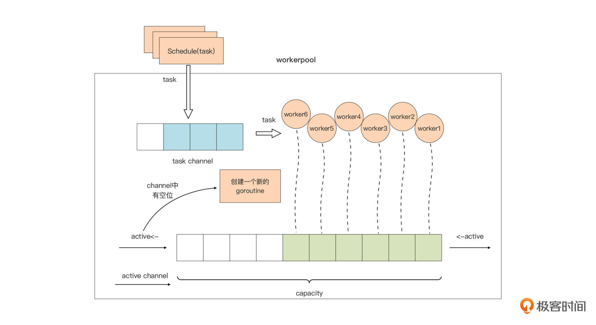

- 00 开篇词 这样入门Go，才能少走弯路.md.html
- 01 前世今生：你不得不了解的Go的历史和现状.md.html
- 02 拒绝“Hello and Bye”：Go语言的设计哲学是怎么一回事？.md.html
- 03 配好环境：选择一种最适合你的Go安装方法.md.html
- 04 初窥门径：一个Go程序的结构是怎样的？.md.html
- 05 标准先行：Go项目的布局标准是什么？.md.html
- 06 构建模式：Go是怎么解决包依赖管理问题的？.md.html
- 07 构建模式：Go Module的6类常规操作.md.html
- 08 入口函数与包初始化：搞清Go程序的执行次序.md.html
- 09 即学即练：构建一个Web服务就是这么简单.md.html
- 10 变量声明：静态语言有别于动态语言的重要特征.md.html
- 11 代码块与作用域：如何保证变量不会被遮蔽？.md.html
- 12 基本数据类型：Go原生支持的数值类型有哪些？.md.html
- 13 基本数据类型：为什么Go要原生支持字符串类型？.md.html
- 14 常量：Go在“常量”设计上的创新有哪些？.md.html
- 15 同构复合类型：从定长数组到变长切片.md.html
- 16 复合数据类型：原生map类型的实现机制是怎样的？.md.html
- 17 复合数据类型：用结构体建立对真实世界的抽象.md.html
- 18 控制结构：if的“快乐路径”原则.md.html
- 19 控制结构：Go的for循环，仅此一种.md.html
- 20 控制结构：Go中的switch语句有哪些变化？.md.html
- 21 函数：请叫我“一等公民”.md.html
- 22 函数：怎么结合多返回值进行错误处理？.md.html
- 23 函数：怎么让函数更简洁健壮？.md.html
- 24 方法：理解“方法”的本质.md.html
- 25 方法：方法集合与如何选择receiver类型？.md.html
- 26 方法：如何用类型嵌入模拟实现“继承”？.md.html
- 27 即学即练：跟踪函数调用链，理解代码更直观.md.html
- 28 接口：接口即契约.md.html
- 29 接口：为什么nil接口不等于nil？.md.html
- 30 接口：Go中最强大的魔法.md.html
- 31 并发：Go的并发方案实现方案是怎样的？.md.html
- 32 并发：聊聊Goroutine调度器的原理.md.html
- 33 并发：小channel中蕴含大智慧.md.html
- 34 并发：如何使用共享变量？.md.html
- 35 即学即练：如何实现一个轻量级线程池？.md.html
- 36 打稳根基：怎么实现一个TCP服务器？（上）.md.html
- 37 代码操练：怎么实现一个TCP服务器？（中）.md.html
- 38 成果优化：怎么实现一个TCP服务器？（下）.md.html
- 39 驯服泛型：了解类型参数.md.html
- 40 驯服泛型：定义泛型约束.md.html
- 41 驯服泛型：明确使用时机.md.html
- 元旦快乐 这是一份暂时停更的声明.md.html
- 加餐 作为Go Module的作者，你应该知道的几件事.md.html
- 加餐 如何拉取私有的Go Module？.md.html
- 加餐 我“私藏”的那些优质且权威的Go语言学习资料.md.html
- 加餐 聊聊Go 1.17版本的那些新特性.md.html
- 加餐 聊聊Go语言的指针.md.html
- 加餐 聊聊最近大热的Go泛型.md.html
- 大咖助阵 叶剑峰：Go语言中常用的那些代码优化点.md.html
- 大咖助阵 大明：Go泛型，泛了，但没有完全泛.md.html
- 大咖助阵 孔令飞：从小白到“老鸟”，我的Go语言进阶之路.md.html
- 大咖助阵 徐祥曦：从销售到分布式存储工程师，我与 Go 的故事.md.html
- 大咖助阵 曹春晖：聊聊 Go 语言的 GC 实现.md.html
- 大咖助阵 海纳：聊聊语言中的类型系统与泛型.md.html
- 期中测试 一起检验下你的学习成果吧.md.html
- 用户故事 罗杰：我的Go语言学习之路.md.html
- 结束语 和你一起迎接Go的黄金十年.md.html
- 结课测试 快来检验下你的学习成果吧！.md.html
- 捐赠
35 即学即练：如何实现一个轻量级线程池？
你好，我是Tony Bai。
在这一讲的开始，首先恭喜你完成了这门课核心篇语法部分的学习。这一部分的篇幅不多，主要讲解了Go的两个核心语法知识点：接口与并发原语。它们分别是耦合设计与并发设计的主要参与者，Go应用的骨架设计离不开它们。
但理论和实践毕竟是两回事，学完了基本语法，也需要实操来帮助我们落地。所以，在这核心篇的最后一讲，我依然会用一个小实战项目，帮助你学会灵活运用这部分的语法点。
不过，关于接口类型做为“关节”作用的演示，我们前面的两个小实战项目中都有一定的体现了，只是那时还没有讲到接口类型，你现在可以停下来，回顾一下09讲和27讲的代码，看看是否有更深刻的体会。
而且，接口类型对Go应用静态骨架的编织作用，在接口类型数量较多的项目中体现得更明显，由于篇幅有限，我很难找到一个合适的演示项目。
因此，这一讲的实战项目，我们主要围绕Go并发来做，实现一个轻量级线程池，也就是Goroutine池。
为什么要用到Goroutine池？
在第31讲学习Goroutine的时候，我们就说过：相对于操作系统线程，Goroutine的开销十分小，一个Goroutine的起始栈大小为2KB，而且创建、切换与销毁的代价很低，我们可以创建成千上万甚至更多Goroutine。
所以和其他语言不同的是，Go应用通常可以为每个新建立的连接创建一个对应的新Goroutine，甚至是为每个传入的请求生成一个Goroutine去处理。这种设计还有一个好处，实现起来十分简单，Gopher们在编写代码时也没有很高的心智负担。
不过，Goroutine的开销虽然“廉价”，但也不是免费的。
最明显的，一旦规模化后，这种非零成本也会成为瓶颈。我们以一个Goroutine分配2KB执行栈为例，100w Goroutine就是2GB的内存消耗。
其次，Goroutine从Go 1.4版本开始采用了连续栈的方案，也就是每个Goroutine的执行栈都是一块连续内存，如果空间不足，运行时会分配一个更大的连续内存空间作为这个Goroutine的执行栈，将原栈内容拷贝到新分配的空间中来。
连续栈的方案，虽然能避免Go 1.3采用的分段栈会导致的“hot split”问题，但连续栈的原理也决定了，一旦Goroutine的执行栈发生了grow，那么即便这个Goroutine不再需要那么大的栈空间，这个Goroutine的栈空间也不会被Shrink（收缩）了，这些空间可能会处于长时间闲置的状态，直到Goroutine退出。
另外，随着Goroutine数量的增加，Go运行时进行Goroutine调度的处理器消耗，也会随之增加，成为阻碍Go应用性能提升的重要因素。
那么面对这样的问题，常见的应对方式是什么呢？
Goroutine池就是一种常见的解决方案。这个方案的核心思想是对Goroutine的重用，也就是把M个计算任务调度到N个Goroutine上，而不是为每个计算任务分配一个独享的Goroutine，从而提高计算资源的利用率。
接下来，我们就来真正实现一个简单的Goroutine池，我们叫它workerpool。
workerpool的实现原理
workerpool的工作逻辑通常都很简单，所以即便是用于生产环境的workerpool实现，代码规模也都在千行左右。
当然，workerpool有很多种实现方式，这里为了更好地演示Go并发模型的应用模式，以及并发原语间的协作，我们采用完全基于channel+select的实现方案，不使用其他数据结构，也不使用sync包提供的各种同步结构，比如Mutex、RWMutex，以及Cond等。
workerpool的实现主要分为三个部分：
- pool的创建与销毁；
- pool中worker（Goroutine）的管理；
- task的提交与调度。
其中，后两部分是pool的“精髓”所在，这两部分的原理我也用一张图表示了出来：

我们先看一下图中pool对worker的管理。
capacity是pool的一个属性，代表整个pool中worker的最大容量。我们使用一个带缓冲的channel：active，作为worker的“计数器”，这种channel使用模式就是我们在第33讲中讲过的计数信号量，如果记不太清了可以复习一下第33讲中的相关内容。
当active channel可写时，我们就创建一个worker，用于处理用户通过Schedule函数提交的待处理的请求。当active channel满了的时候，pool就会停止worker的创建，直到某个worker因故退出，active channel又空出一个位置时，pool才会创建新的worker填补那个空位。
这张图里，我们把用户要提交给workerpool执行的请求抽象为一个Task。Task的提交与调度也很简单：Task通过Schedule函数提交到一个task channel中，已经创建的worker将从这个task channel中读取task并执行。
好了！“Talk is cheap，show me the code”！接下来，我们就来写一版workerpool的代码，来验证一下这里分析的原理是否可行。
workerpool的一个最小可行实现
我们先建立workerpool目录作为实战项目的源码根目录，然后为这个项目创建go module：
$mkdir workerpool1
$cd workerpool1
$go mod init github.com/bigwhite/workerpool
接下来，我们创建pool.go作为workpool包的主要源码文件。在这个源码文件中，我们定义了Pool结构体类型，这个类型的实例代表一个workerpool：
type Pool struct {
capacity int // workerpool大小
active chan struct{} // 对应上图中的active channel
tasks chan Task // 对应上图中的task channel
wg sync.WaitGroup // 用于在pool销毁时等待所有worker退出
quit chan struct{} // 用于通知各个worker退出的信号channel
}
workerpool包对外主要提供三个API，它们分别是：
- workerpool.New：用于创建一个pool类型实例，并将pool池的worker管理机制运行起来；
- workerpool.Free：用于销毁一个pool池，停掉所有pool池中的worker；
- Pool.Schedule：这是Pool类型的一个导出方法，workerpool包的用户通过该方法向pool池提交待执行的任务（Task）。
接下来我们就重点看看这三个API的实现。
我们先来看看workerpool.New是如何创建一个pool实例的：
func New(capacity int) *Pool {
if capacity <= 0 {
capacity = defaultCapacity
}
if capacity > maxCapacity {
capacity = maxCapacity
}
p := &Pool{
capacity: capacity,
tasks: make(chan Task),
quit: make(chan struct{}),
active: make(chan struct{}, capacity),
}
fmt.Printf("workerpool start\n")
go p.run()
return p
}
我们看到，New函数接受一个参数capacity用于指定workerpool池的容量，这个参数用于控制workerpool最多只能有capacity个worker，共同处理用户提交的任务请求。函数开始处有一个对capacity参数的“防御性”校验，当用户传入不合理的值时，函数New会将它纠正为合理的值。
Pool类型实例变量p完成初始化后，我们创建了一个新的Goroutine，用于对workerpool进行管理，这个Goroutine执行的是Pool类型的run方法：
func (p *Pool) run() {
idx := 0
for {
select {
case <-p.quit:
return
case p.active <- struct{}{}:
// create a new worker
idx++
p.newWorker(idx)
}
}
}
run方法内是一个无限循环，循环体中使用select监视Pool类型实例的两个channel：quit和active。这种在for中使用select监视多个channel的实现，在Go代码中十分常见，是一种惯用法。
当接收到来自quit channel的退出“信号”时，这个Goroutine就会结束运行。而当active channel可写时，run方法就会创建一个新的worker Goroutine。 此外，为了方便在程序中区分各个worker输出的日志，我这里将一个从1开始的变量idx作为worker的编号，并把它以参数的形式传给创建worker的方法。
我们再将创建新的worker goroutine的职责，封装到一个名为newWorker的方法中：
func (p *Pool) newWorker(i int) {
p.wg.Add(1)
go func() {
defer func() {
if err := recover(); err != nil {
fmt.Printf("worker[%03d]: recover panic[%s] and exit\n", i, err)
<-p.active
}
p.wg.Done()
}()
fmt.Printf("worker[%03d]: start\n", i)
for {
select {
case <-p.quit:
fmt.Printf("worker[%03d]: exit\n", i)
<-p.active
return
case t := <-p.tasks:
fmt.Printf("worker[%03d]: receive a task\n", i)
t()
}
}
}()
}
我们看到，在创建一个新的worker goroutine之前，newWorker方法会先调用p.wg.Add方法将WaitGroup的等待计数加一。由于每个worker运行于一个独立的Goroutine中，newWorker方法通过go关键字创建了一个新的Goroutine作为worker。
新worker的核心，依然是一个基于for-select模式的循环语句，在循环体中，新worker通过select监视quit和tasks两个channel。和前面的run方法一样，当接收到来自quit channel的退出“信号”时，这个worker就会结束运行。tasks channel中放置的是用户通过Schedule方法提交的请求，新worker会从这个channel中获取最新的Task并运行这个Task。
Task是一个对用户提交的请求的抽象，它的本质就是一个函数类型：
type Task func()
这样，用户通过Schedule方法实际上提交的是一个函数类型的实例。
在新worker中，为了防止用户提交的task抛出panic，进而导致整个workerpool受到影响，我们在worker代码的开始处，使用了defer+recover对panic进行捕捉，捕捉后worker也是要退出的，于是我们还通过<-p.active更新了worker计数器。并且一旦worker goroutine退出，p.wg.Done也需要被调用，这样可以减少WaitGroup的Goroutine等待数量。
我们再来看workerpool提供给用户提交请求的导出方法Schedule：
var ErrWorkerPoolFreed = errors.New("workerpool freed") // workerpool已终止运行
func (p *Pool) Schedule(t Task) error {
select {
case <-p.quit:
return ErrWorkerPoolFreed
case p.tasks <- t:
return nil
}
}
Schedule方法的核心逻辑，是将传入的Task实例发送到workerpool的tasks channel中。但考虑到现在workerpool已经被销毁的状态，我们这里通过一个select，检视quit channel是否有“信号”可读，如果有，就返回一个哨兵错误ErrWorkerPoolFreed。如果没有，一旦p.tasks可写，提交的Task就会被写入tasks channel，以供pool中的worker处理。
这里要注意的是，这里的Pool结构体中的tasks是一个无缓冲的channel，如果pool中worker数量已达上限，而且worker都在处理task的状态，那么Schedule方法就会阻塞，直到有worker变为idle状态来读取tasks channel，schedule的调用阻塞才会解除。
至此，workerpool的最小可行实现的主要逻辑都实现完了。我们来验证一下它是否能按照我们的预期逻辑运行。
现在我们建立一个使用workerpool的项目demo1：
$mkdir demo1
$cd demo1
$go mod init demo1
由于我们要引用本地的module，所以我们需要手工修改一下demo1的go.mod文件，并利用replace指示符将demo1对workerpool的引用指向本地workerpool1路径：
module demo1
go 1.17
require github.com/bigwhite/workerpool v1.0.0
replace github.com/bigwhite/workerpool v1.0.0 => ../workerpool1
然后创建demo1的main.go文件，源码如下：
package main
import (
"time"
"github.com/bigwhite/workerpool"
)
func main() {
p := workerpool.New(5)
for i := 0; i < 10; i++ {
err := p.Schedule(func() {
time.Sleep(time.Second * 3)
})
if err != nil {
println("task: ", i, "err:", err)
}
}
p.Free()
}
这个示例程序创建了一个capacity为5的workerpool实例，并连续向这个workerpool提交了10个task，每个task的逻辑很简单，只是Sleep 3秒后就退出。main函数在提交完任务后，调用workerpool的Free方法销毁pool，pool会等待所有worker执行完task后再退出。
demo1示例的运行结果如下：
workerpool start
worker[005]: start
worker[005]: receive a task
worker[003]: start
worker[003]: receive a task
worker[004]: start
worker[004]: receive a task
worker[001]: start
worker[002]: start
worker[001]: receive a task
worker[002]: receive a task
worker[004]: receive a task
worker[005]: receive a task
worker[003]: receive a task
worker[002]: receive a task
worker[001]: receive a task
worker[001]: exit
worker[005]: exit
worker[002]: exit
worker[003]: exit
worker[004]: exit
workerpool freed
从运行的输出结果来看，workerpool的最小可行实现的运行逻辑与我们的原理图是一致的。
不过，目前的workerpool实现好比“铁板一块”，虽然我们可以通过capacity参数可以指定workerpool容量，但我们无法对workerpool的行为进行定制。
比如当workerpool中的worker数量已达上限，而且worker都在处理task时，用户调用Schedule方法将阻塞，如果用户不想阻塞在这里，以我们目前的实现是做不到的。
那我们可以怎么改进呢？我们可以尝试在上面实现的基础上，为workerpool添加功能选项（functional option）机制。
添加功能选项机制
功能选项机制，可以让某个包的用户可以根据自己的需求，通过设置不同功能选项来定制包的行为。Go语言中实现功能选项机制有多种方法，但Go社区目前使用最为广泛的一个方案，是Go语言之父Rob Pike在2014年在博文《自引用函数与选项设计》中论述的一种，这种方案也被后人称为“功能选项（functional option）”方案。
接下来，我们就来看看如何使用Rob Pike的这种“功能选项”方案，让workerpool支持行为定制机制。
首先，我们将workerpool1目录拷贝一份形成workerpool2目录，我们将在这个目录下为workerpool包添加功能选项机制。
然后，我们在workerpool2目录下创建option.go文件，在这个文件中，我们定义用于代表功能选项的类型Option：
type Option func(*Pool)
我们看到，这个Option实质是一个接受*Pool类型参数的函数类型。那么如何运用这个Option类型呢？别急，马上你就会知道。现在我们先要做的是，明确给workerpool添加什么功能选项。这里我们为workerpool添加两个功能选项：Schedule调用是否阻塞，以及是否预创建所有的worker。
为了支持这两个功能选项，我们需要在Pool类型中增加两个bool类型的字段，字段的具体含义，我也在代码中注释了：
type Pool struct {
... ...
preAlloc bool // 是否在创建pool的时候就预创建workers，默认值为：false
// 当pool满的情况下，新的Schedule调用是否阻塞当前goroutine。默认值：true
// 如果block = false，则Schedule返回ErrNoWorkerAvailInPool
block bool
... ...
}
针对这两个字段，我们在option.go中添加两个功能选项，WithBlock与WithPreAllocWorkers：
func WithBlock(block bool) Option {
return func(p *Pool) {
p.block = block
}
}
func WithPreAllocWorkers(preAlloc bool) Option {
return func(p *Pool) {
p.preAlloc = preAlloc
}
}
我们看到，这两个功能选项实质上是两个返回闭包函数的函数。
为了支持将这两个Option传给workerpool，我们还需要改造一下workerpool包的New函数，改造后的New函数代码如下：
func New(capacity int, opts ...Option) *Pool {
... ...
for _, opt := range opts {
opt(p)
}
fmt.Printf("workerpool start(preAlloc=%t)\n", p.preAlloc)
if p.preAlloc {
// create all goroutines and send into works channel
for i := 0; i < p.capacity; i++ {
p.newWorker(i + 1)
p.active <- struct{}{}
}
}
go p.run()
return p
}
新版New函数除了接受capacity参数之外，还在它的参数列表中增加了一个类型为Option的可变长参数opts。在New函数体中，我们通过一个for循环，将传入的Option运用到Pool类型的实例上。
新版New函数还会根据preAlloc的值来判断是否预创建所有的worker，如果需要，就调用newWorker方法把所有worker都创建出来。newWorker的实现与上一版代码并没有什么差异，这里就不再详说了。
但由于preAlloc选项的加入，Pool的run方法的实现有了变化，我们来看一下：
func (p *Pool) run() {
idx := len(p.active)
if !p.preAlloc {
loop:
for t := range p.tasks {
p.returnTask(t)
select {
case <-p.quit:
return
case p.active <- struct{}{}:
idx++
p.newWorker(idx)
default:
break loop
}
}
}
for {
select {
case <-p.quit:
return
case p.active <- struct{}{}:
// create a new worker
idx++
p.newWorker(idx)
}
}
}
新版run方法在preAlloc=false时，会根据tasks channel的情况在适合的时候创建worker（第4行~第18行)，直到active channel写满，才会进入到和第一版代码一样的调度逻辑中（第20行~第29行）。
而且，提供给用户的Schedule函数也因WithBlock选项，有了一些变化：
func (p *Pool) Schedule(t Task) error {
select {
case <-p.quit:
return ErrWorkerPoolFreed
case p.tasks <- t:
return nil
default:
if p.block {
p.tasks <- t
return nil
}
return ErrNoIdleWorkerInPool
}
}
Schedule在tasks chanel无法写入的情况下，进入default分支。在default分支中，Schedule根据block字段的值，决定究竟是继续阻塞在tasks channel上，还是返回ErrNoIdleWorkerInPool错误。
和第一版worker代码一样，我们也来验证一下新增的功能选项是否好用。我们建立一个使用新版workerpool的项目demo2，demo2的go.mod与demo1的go.mod相似：
module demo2
go 1.17
require github.com/bigwhite/workerpool v1.0.0
replace github.com/bigwhite/workerpool v1.0.0 => ../workerpool2
demo2的main.go文件如下：
package main
import (
"fmt"
"time"
"github.com/bigwhite/workerpool"
)
func main() {
p := workerpool.New(5, workerpool.WithPreAllocWorkers(false), workerpool.WithBlock(false))
time.Sleep(time.Second * 2)
for i := 0; i < 10; i++ {
err := p.Schedule(func() {
time.Sleep(time.Second * 3)
})
if err != nil {
fmt.Printf("task[%d]: error: %s\n", i, err.Error())
}
}
p.Free()
}
在demo2中，我们使用workerpool包提供的功能选项，设置了我们期望的workerpool的运作行为，包括不要预创建worker，以及不要阻塞Schedule调用。
考虑到Goroutine调度的次序的不确定性，这里我在创建workerpool与真正开始调用Schedule方法之间，做了一个Sleep，尽量减少Schedule都返回失败的频率（但这仍然无法保证这种情况不会发生）。
运行demo2，我们会得到这个结果：
workerpool start(preAlloc=false)
task[1]: error: no idle worker in pool
worker[001]: start
task[2]: error: no idle worker in pool
task[4]: error: no idle worker in pool
task[5]: error: no idle worker in pool
task[6]: error: no idle worker in pool
task[7]: error: no idle worker in pool
task[8]: error: no idle worker in pool
task[9]: error: no idle worker in pool
worker[001]: receive a task
worker[002]: start
worker[002]: exit
worker[001]: receive a task
worker[001]: exit
workerpool freed(preAlloc=false)
不过，由于Goroutine调度的不确定性，这个结果仅仅是很多种结果的一种。我们看到，仅仅001这个worker收到了task，其余的worker都因为worker尚未创建完毕，而返回了错误，而不是像demo1那样阻塞在Schedule调用上。
小结
好了，今天的课讲到这里就结束了，现在我们一起来回顾一下吧。
在这一讲中，我们基于我们前面所讲的Go并发方面的内容，设计并实现了一个workerpool的最小可行实现，只用了不到200行代码。为了帮助你理解Go并发原语是如何运用的，这个workerpool实现完全基于channel+select，并没有使用到sync包提供的各种锁。
我们还基于workerpool的最小可行实现，为这个pool增加了功能选项的支持，我们采用的功能选项方案也是Go社区最为流行的方案，日常编码中如果你遇到了类似的需求可以重点参考。
最后我要提醒你：上面设计与实现的workerpool只是一个演示项目，不能作为生产项目使用。
思考题
关于workerpool这样的项目，如果让你来设计，你的设计思路是什么，不妨在留言区敞开谈谈？
欢迎你把这节课分享给更多感兴趣的朋友。我是Tony Bai，我们下节课见。
今天的项目源码在这里！
© 2019 - 2023 Liangliang Lee. Powered by gin and hexo-theme-book.